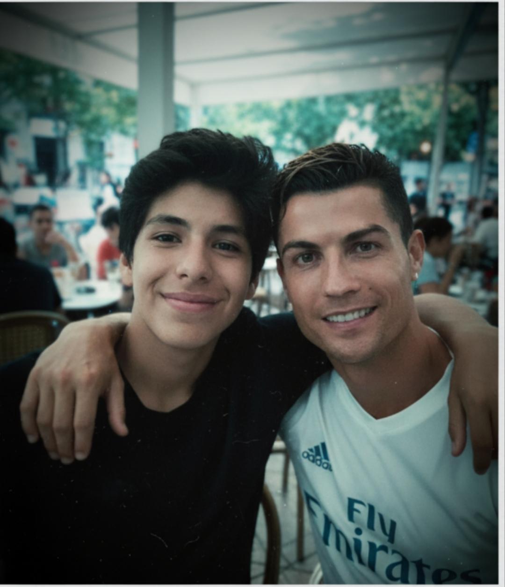

PORQUE LO ESCOGI?
La verdad nunca me gusto el futbol desde hace como 2 años por el cual me enamore viendo el mundial y asi conociendo bien el futbol y sus juegos, despues de eso empece a jugar y empece a ser mejor y desde ahi siempre que tenia tiempo queria ir a la cancha. Despues de salir de la secundaria solo hizo que jugara mas y mas y desde ahi se convirtio en mi deporte favorito talvez no soy el mejor pero siermpre hago el intento por mejorar. Entonces pues lo escogi por ser mi deporte favorito por que gracias a el me la paso mejor y intentar mejorar siempre. Como añado que tambien lo escogi por cris aqui una foto con el.

como algun otro dato curioso yo eh jugado en un equipo pero solo una vez en el que no hice nada mas que un gol y lesionarme fuera de eso mejor nada.